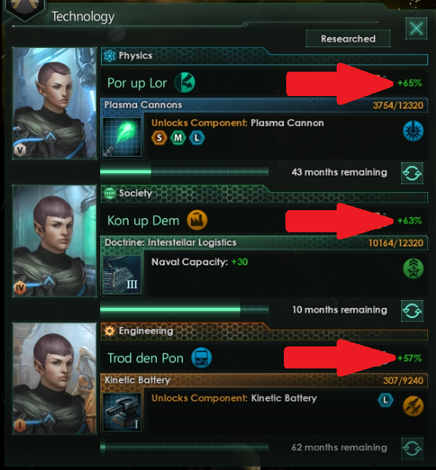

Research Speed

Research Speed is the bonus you get towards your monthly progress. This number is supposed to be the average for all categories. Research speeds are typically fairly similar between categories so the results should still be very accurate. If you want perfect accuracy, you must rerun the calculation for each category.
Remember that research speed is highly variable and changes due to a scientist skill rating and specialty as well as various other temporary bonuses. Keep this in mind when determining the average you want to calculate for.